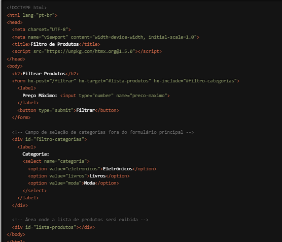

Estamos empolgados em apresentar uma funcionalidade poderosa e versátil do HTMX que amplia o controle sobre as requisições HTTP em suas aplicações web: o atributo `hx-include`. Com `hx-include`, você pode incluir dados adicionais nas requisições HTTP, proporcionando maior flexibilidade e capacidade de personalização nas interações do usuário. Vamos explorar como essa funcionalidade pode elevar o nível das suas aplicações web.
O que é o atributo `hx-include`?
O `hx-include` é um atributo do HTMX que permite incluir dados adicionais de outros elementos HTML em uma requisição HTTP. Isso significa que você pode enviar informações extras junto com a requisição, sem precisar criar manipulações complexas de JavaScript. O `hx-include` é especialmente útil quando você precisa enviar múltiplos valores de diferentes partes do formulário ou da página em uma única requisição.
Como Funciona?
Vamos ver um exemplo prático para entender melhor como o `hx-include` pode ser usado. Suponha que você tenha um formulário de pesquisa com critérios adicionais que devem ser enviados junto com a requisição, mas que não estão dentro do formulário principal:

Neste exemplo, quando o formulário de pesquisa é submetido, a requisição HTTP POST é enviada para a URL "/pesquisar". Graças ao atributo `hx-include="#criterios-adicionais"`, os dados dos campos de checkbox dentro do `div` com id "criterios-adicionais" também são incluídos na requisição. A resposta da requisição é então inserida no `div` com id "resultados", atualizando dinamicamente a área de resultados.